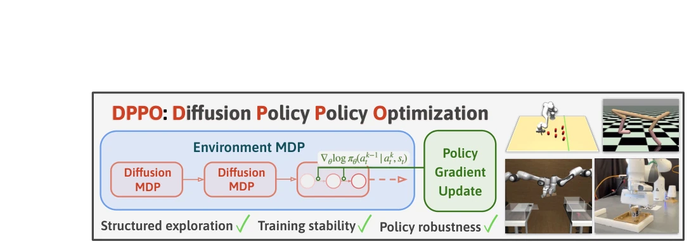
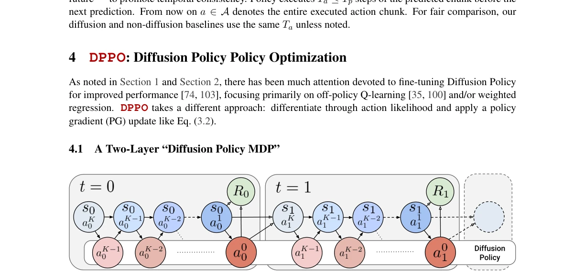
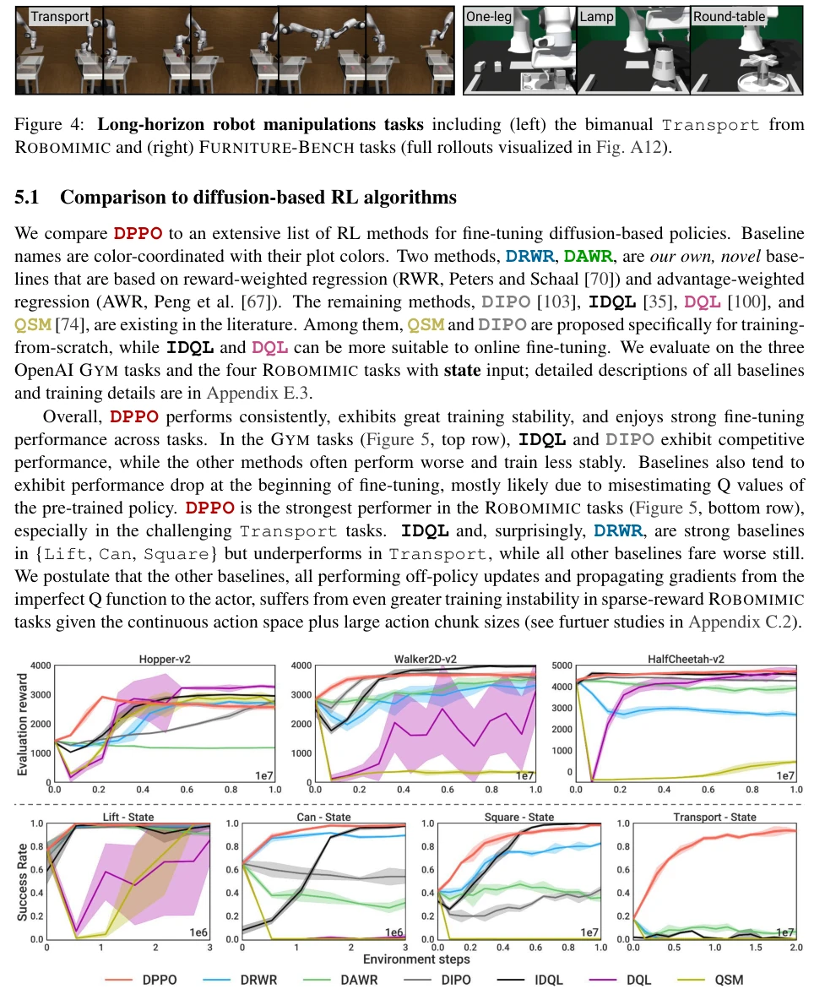
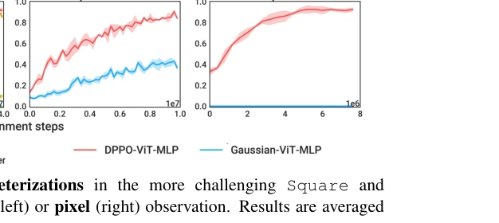
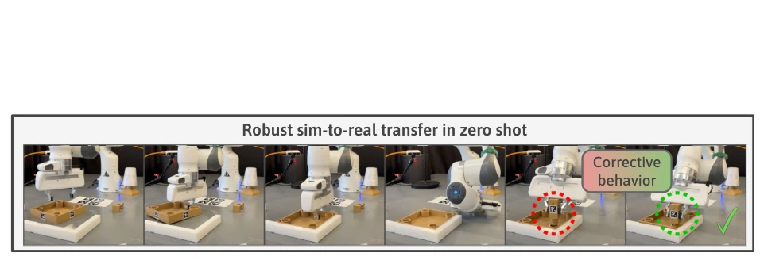
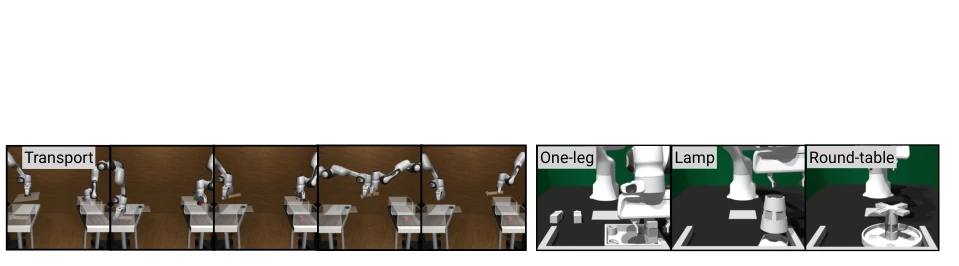
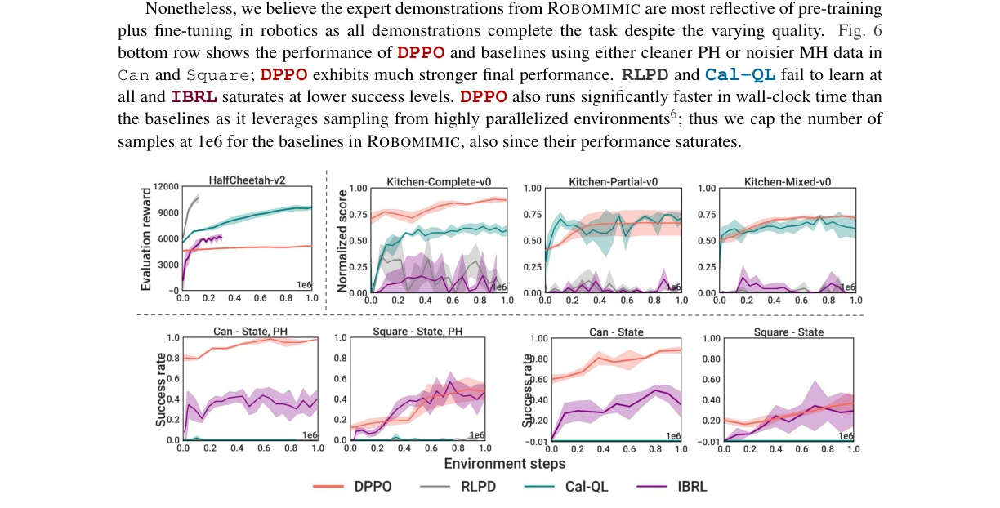
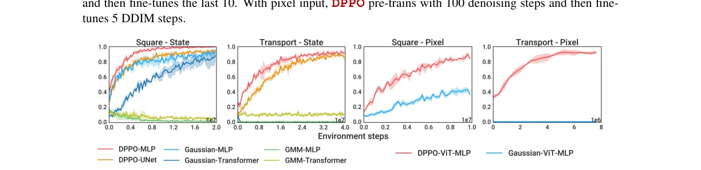
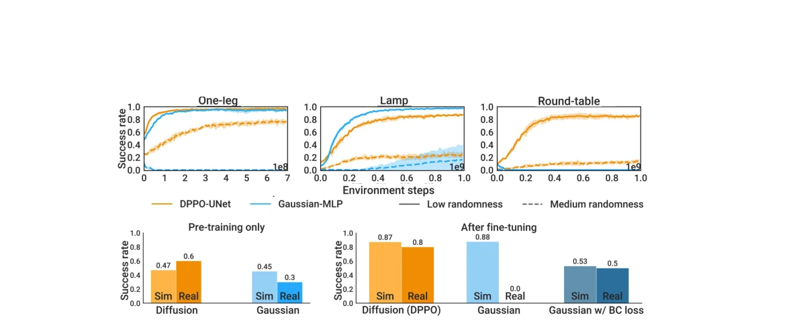
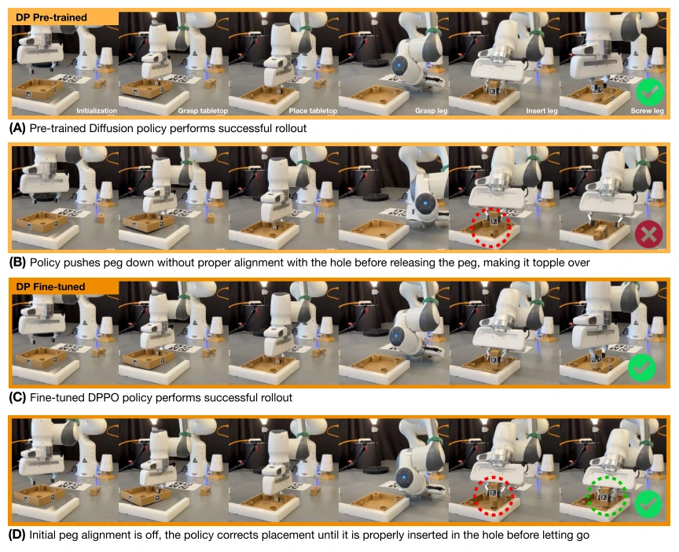

This paper is essentially 'de-mystifying' the RL community, successfully implementing diffusion policy fine-tuning using policy gradients, which was widely considered difficult. Originally, the industry generally believed PG methods were inefficient for diffusion models; however, DPPO performed surprisingly well during the fine-tuning phase, especially in long-horizon tasks, proving much more stable than off-policy Q-learning methods. However, do not celebrate too early; it essentially still relies on the quality of pre-training data. If pre-training coverage is insufficient, fine-tuning cannot rescue it. Furthermore, the conclusion admits that sample efficiency is inferior to off-policy, which might still be a pain point on real robots. Overall, it is a practical fine-tuning framework, but do not expect it to replace training from scratch; it is suitable for scenarios where pre-training is already done but adaptation to new environments is required.
After pre-training robot policies, they are often constrained by the quality or coverage of expert data [64], necessitating further fine-tuning via reinforcement learning (RL). Although Diffusion Policy has become mainstream due to its training stability and multi-modal modeling capabilities [20], the industry generally considers PG methods unsuitable for fine-tuning diffusion models, fearing that excessively long effective horizons lead to high variance [74, 103]. Existing fine-tuning methods mostly rely on off-policy Q-learning [35, 100] or weighted regression [47, 67], yet exhibit insufficient stability in sparse reward and long-horizon tasks. This paper aims to verify the feasibility of PG fine-tuning for diffusion policies, addressing issues of unstable training or performance bottlenecks in existing methods for continuous control tasks, thereby filling the theoretical gap in Diffusion Policy fine-tuning.

Figure 1: We introduce DPPO, Diffusion Policy Policy Optimization, that fine-tunes pre-trained Diffusion Policy using policy gradient. DPPO treats the denoising process as a Markov Decision Process (“Diffusion MDP”) allowing the task reward signal (from “Environment MDP“) to easily propagate through Diffusion Policy (Fig. 3). Policy gradient update then leverages the tractable Gaussian likelihood at each denoising step. Extensive experiments in simulation and hardware show DPPO affords structured exploration and training stability during policy fine-tuning, and the final policy exhibits strong robustness and generalization.
The core innovation of DPPO lies in constructing a two-layer MDP, connecting the environment MDP and diffusion denoising MDP in series to form a 'Diffusion Policy MDP'. States encompass environment states and denoising intermediate actions, with rewards provided only upon execution of the final action. Policy gradients are calculated using the Gaussian likelihood of each denoising step, applying PPO updates. Design details include: 1) Fine-tuning only the last few denoising steps to accelerate training; 2) Supporting DDIM sampling to reduce steps; 3) Adjusting noise schedules (clip sigma) to balance exploration and stability; 4) The value function depends solely on environment states rather than denoising actions. This enables stable gradient propagation, leveraging the structured exploration characteristics of diffusion models, thereby avoiding the instability of traditional PG on diffusion models.

Figure 3: We treat the denoising process in Diffusion Policy as an MDP, and the whole environment episode can be considered as a chain of such MDPs. Now the entire chain (“Diffusion Policy MDP”, MDP) involves a Gaussian likelihood at each (denoising) step and thus can be optimized with policy gradient. Blue circle denotes the state and red circle denotes the action in MDP.
Evaluated on OpenAI Gym, Robomimic, and Furniture-Bench. Compared against IDQL [35], RLPD [7], and Gaussian policies. DPPO significantly outperformed off-policy baselines in long-horizon tasks such as Robomimic Transport, with robust performance on Gym tasks. Achieved 80% success rate in zero-shot sim-to-real on Furniture-Bench, whereas Gaussian policies failed on hardware. Ablation studies indicate that value estimation relying solely on environment states and noise schedule clipping are critical for stability. DPPO demonstrated superior structured exploration and robustness to initial states during the fine-tuning phase, proving its generalization capabilities in complex manipulation tasks.

Figure 5: Comparing to other diffusion-based RL algorithms. Top row: GYM tasks [11] averaged over five seeds. Bottow row: ROBOMIMIC tasks [60], averaged over three seeds, with state observation. DPPO curves are slightly thicker for better visibility.

Fig. 7 display results for the more challenging Square and Transport — we defer the results in Lift and Can to Fig. A9. With state input, DPPO outperforms Gaussian and GMM policies, with faster convergence to ∼100% success rate in Lift and Can, and greater final performance on Square and the challenging Transport, where it reaches > 90%. UNet and MLP variants perform similarly, with the latter training somewhat more rapidly. With pixel inputs, we use a Vision-Transformer-based (ViT) image encoder introduced in Hu et al. [40] and an MLP head and compare the resulting variants DPPO- ViT-MLP and Gaussian-ViT-MLP (we omit GMM due to poor performance in state-based training). While the two are comparable on Lift and Can, DPPO trains more quickly and to higher accuracy on Square, and drastically
其他图片Other Figures

Figure 2: DPPO solves challenging long-horizon manipulation tasks from FURNITURE-BENCH ([36]), and allows robust sim-to-real transfer without using any real data (see Section 5.4).

Figure 4: Long-horizon robot manipulations tasks including (left) the bimanual Transport from ROBOMIMIC and (right) FURNITURE-BENCH tasks (full rollouts visualized in Fig. A12).

Figure 6: Comparing to other demo-augmented RL algorithms. Top left: HalfCheetah-v2 task [11] averaged over five seeds. Top right: FRANKA-KITCHEN task [32] averaged over three seeds. Bottom row: ROBOMIMIC tasks [60] averaged over three seeds with state observation, using either Proficient-Human (PH) or Multi-Human (MH) data.

Figure 7: Comparing to other policy parameterizations in the more challenging Square and Transport tasks from ROBOMIMIC, with state (left) or pixel (right) observation. Results are averaged over three seeds.

Figure 8: (Top) DPPO vs. Gaussian-MLP baseline in simulated FURNITURE-BENCH tasks. Results are averaged over three seeds. (Bottom) Sim-to-real transfer results in One-leg.

Figure 9: Qualitative comparison of pre-trained vs. fine-tuned DPPO policies in hardware evaluation. (A) Successful rollout with the pre-trained policy. (B) Failed rollout with the pre-trained policy due to imprecise insertion. (C) Successful rollout with the fine-tuned policy. (D) Successful rollout with the fine- tuned policy exhibiting corrective behavior.